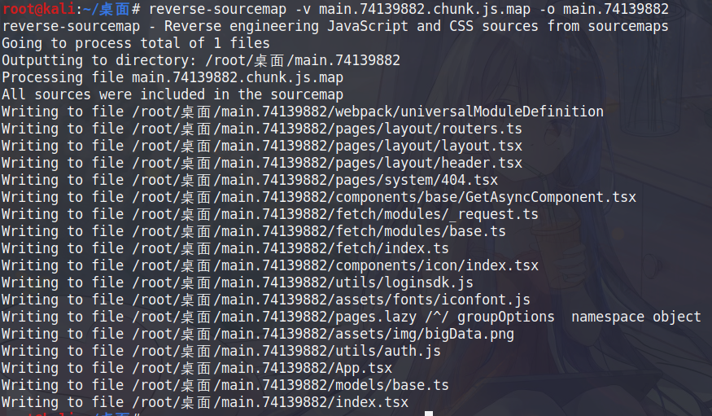
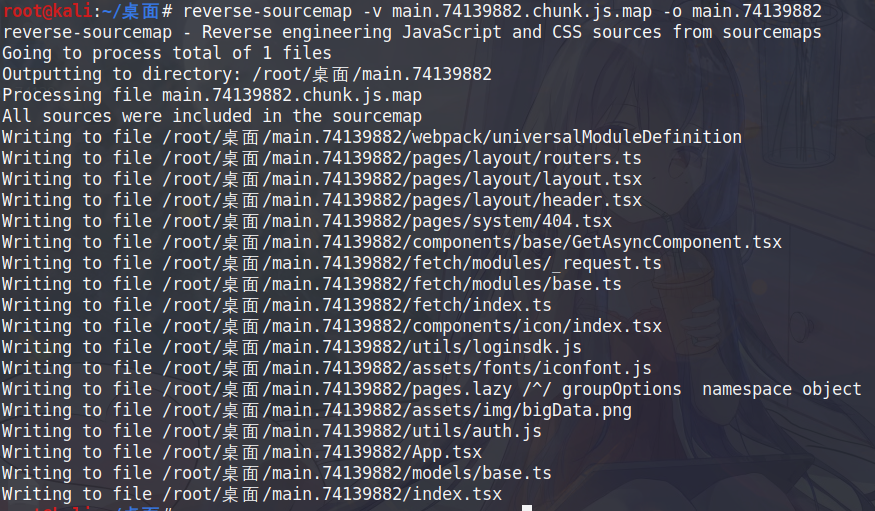

sourcemap泄露获取前端源码
reverse-sourcemap 下载地址:https://github.com/davidkevork/reverse-sourcemap
-
安装 nodejs
apt install npm -
reverse-sourcemap
npm install --global reverse-sourcemap -
使用.js.map 文件获取前端源码
reverse-sourcemap -v xxx.js.map -o output
reverse-sourcemap 下载地址:https://github.com/davidkevork/reverse-sourcemap
安装 nodejs
apt install npm
reverse-sourcemap
npm install --global reverse-sourcemap
使用.js.map 文件获取前端源码
reverse-sourcemap -v xxx.js.map -o output
